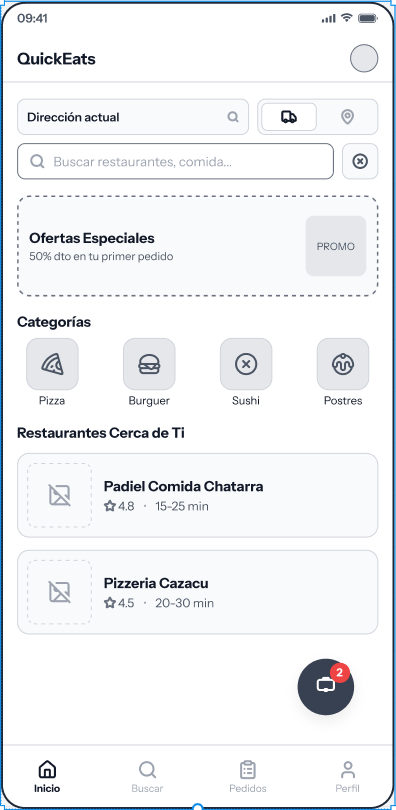
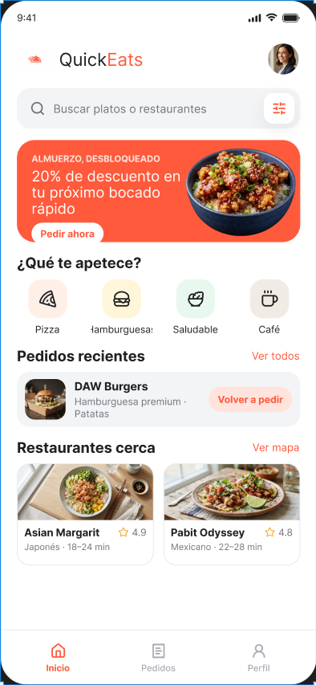
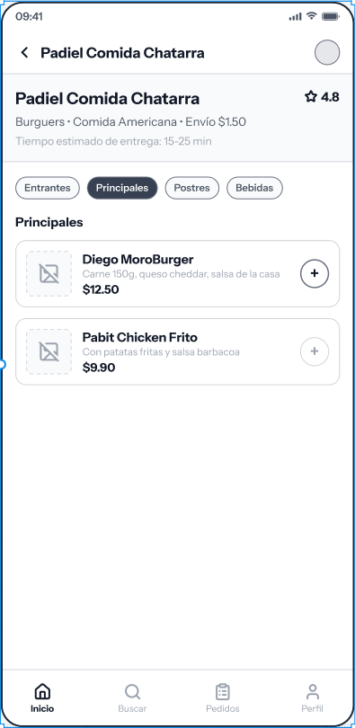
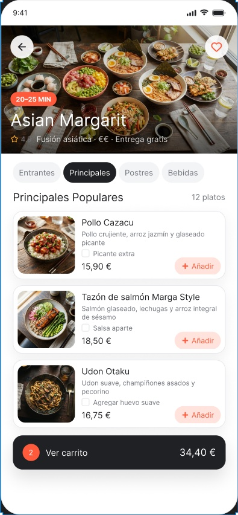
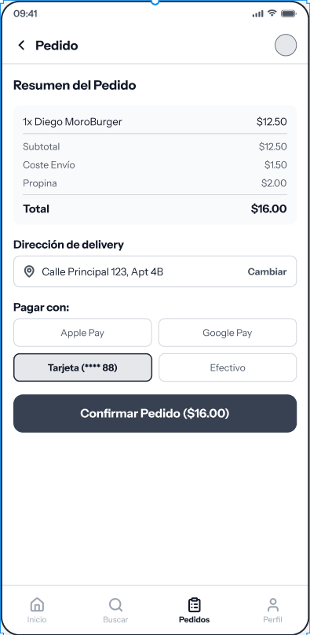
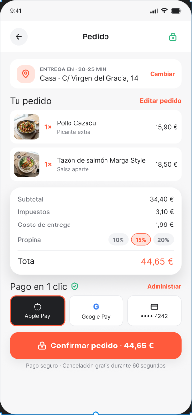
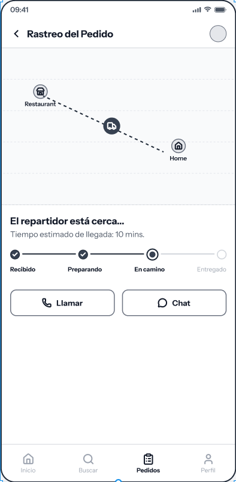
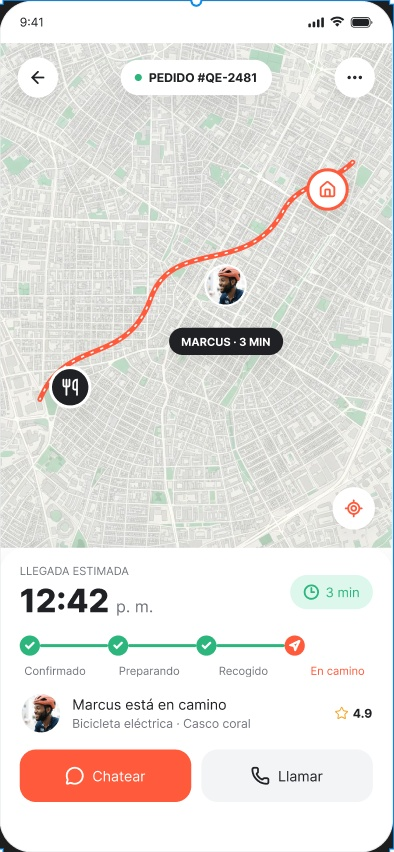
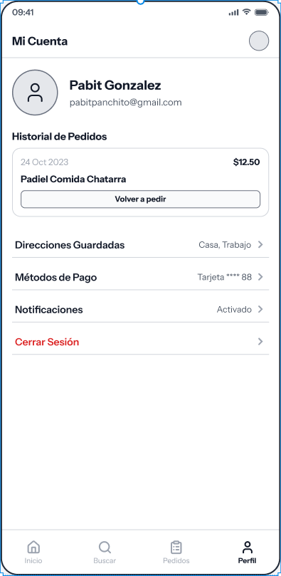
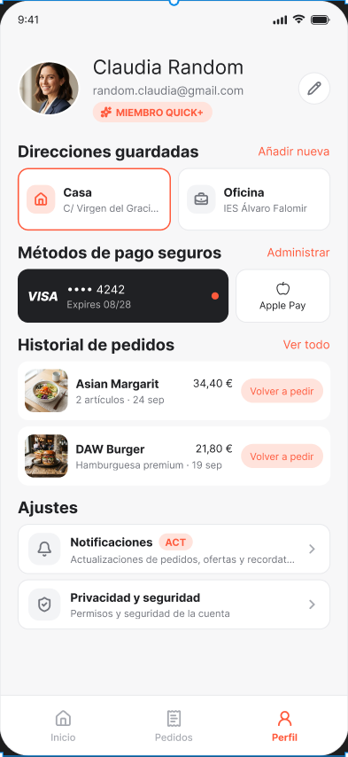

"Del móvil a tu mesa en un clic"
Hecho Por:
Carlos J Samper Enescu
2º DAW - IES Álvaro Falomir
De 18 a 60 años.
Desarrollar una aplicación altamente intuitiva y fácil de usar, garantizando una curva de aprendizaje casi nula para cualquier rango de edad.
Utilizado exclusivamente para llamadas a la acción (CTAs) y acentos de atención. Aporta vitalidad sin sobrecargar la interfaz.
Fuente geométrica sin serifa. Altamente legible en pantallas móviles, garantizando claridad tanto en menús como en precios.
Uso extenso de espacios en blanco (negative space), esquinas redondeadas y tarjetas con sombras suaves para reducir la carga cognitiva.
Al dirigirnos a un público de hasta 60 años, se descartó el "Dark Mode". El modo claro (texto negro sobre fondo blanco) ofrece el mayor nivel de contraste, minimizando la fatiga visual en usuarios con vista cansada (presbicia) y maximizando la retención.
El color naranja fomenta la urgencia, el dinamismo y estimula el apetito psicológicamente. Mantener el fondo blanco y aplicar el naranja solo en elementos interactivos dirige instintivamente al usuario hacia la conversión (pago).
Se ha diseñado priorizando la "Thumb Zone" (zona del pulgar). Botones críticos como "Confirmar Pedido" o la barra de navegación ocupan el tercio inferior de la pantalla, haciendo que el usuario no tenga que estirar la mano, reduciendo la fricción en la usabilidad.

Wireframe Estructural

Mockup Final

Wireframe Estructural

Mockup Final

Wireframe Estructural

Mockup Final

Wireframe Estructural

Mockup Final

Wireframe Estructural

Mockup Final
La transición de wireframes a componentes finales garantiza que la estructura validada se potencie con una capa visual atractiva, cumpliendo directamente con el objetivo de accesibilidad y retención de usuarios.